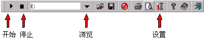
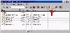

|
|
| 当前位置：电脑报电子版 > 1999 年 > 44 期 > 软件世界 > 轻松制作光盘索引文件 |
| 《 轻松制作光盘索引文件 》 |
| 相信每一个电脑爱好者都会拥有一大摞的软件光盘或图片素材光盘，当你为了寻找其中的一个文件或一幅图片而要翻遍几乎所有的光盘时，那种难度莫过于大海捞针。这个时候你总是会希望得到一份光盘资料索引，将每一张光盘中所容纳的软件与图片一一罗列出来。或者你会希望得到每一张光盘中的每一层目录下的每一个文件都有的详细索引文件。 现在，我们的主角登场了——CD2HTML。这是一个帮你将所拥有的光盘内容自动生成详尽索引文件的软件，它可以自动搜索光盘中的每一层目录和每一个文件，并将搜索到的目录名和文件名结果自动生成多种形式的索引文件（包括HTML、TEXT、EMF等类型）。更为值得注意的是，它所生成的HTML文件对应于它所搜索到的文件名自动建立链接，对应于可执行文件自动提取图标（icon)，对应于图像文件（JPEG、GIF）自动生成相应的缩略图，它甚至可以读取压缩文件（ZIP/UnZIP/UnRAR）中的内容。 让我们来了解一下它的实际操作吧。首先从http://www.lausitz.net/～petro/处下载该软件的压缩文件（软件下载大小为560KB，为免费软件），指定相应目录解压缩。点击CD2HTML程序文件中的小瓢虫的图标，启动软件。 首先了解一下它的工具栏，见图1。 点击浏览按钮，指定光驱盘符。从这里我们可以发现除了可以对光盘做索引文件之外，我们还可以对硬盘做相应的索引文件。 点击设置（“Option”)按钮，在对话框中做相应的选择。索引文件制作得是否详尽有效，就看这里的功夫了。让我们来仔细研究一下吧： 首先点击常规(“General”)标签卡，见图2。 在“Index of”后面输入光盘的名称，这也是索引文件的名称。注意选择自动保存选项，接下来对话框中所有设置的更改将会被自动记录下来。  接着点击用户菜单(“User Menu”)标签卡，见图3。 在此选择搜索方式，其中包括了MP3搜索、动态GIF搜索、文件搜索、目录搜索、图像搜索等多种类型，这里也决定了将来生成的HTML文件的内容结构方式。 设定完毕之后点击文件(“Files”)标签卡，见图4。 首先通过左面的选框设置所生成的HTML文件格式，三项选择分别为创建一个HTML文件、建立多页文件并限定每页文件目录项目数量、为每个目录创建独立的HTML文件。与此同时还设定了缩略图的路径名称与前缀形式。 在搜索1(“Search I”)标签卡上（见图5），以通配符的形式输入需要搜索的文件的类别，可以通过改变“Searching Depth”的数字大小来设置搜索的深度。最大可以搜索100层目录，这样一来藏得再深的文件也会被挖出来的。 为了加大搜索范围，可以取消搜索唯一目录(“Search only Directories”)的设置。 接下来的搜索2(“Search Ⅱ”)标签卡中（见图6），所有设定仅仅对生成的HTML文件起作用，首先是创立在HTML文件中自动生成链接的文件类型，同样是以通配符的形式书写。在描述“Description”一项中指定读取file_iddiz和infotxt等压缩文件中的说明描述内容；在ASCII图形“ANSI－Graphics”选项中设定删除或替换file_iddiz或infotxt文件中的ASCII字符，设定完毕以后就可以放心地提取文件中原有的说明描述。 对应HTML文件的格式、颜色的设定可以在HTML标签卡中作相应的改变，这对于熟悉编写网页的电脑爱好者来说相当方便。在图像(“Image”)标签卡将设定读取JPEG、GIF图像文件的方式以及生成缩略图的大小、边框的样式等。 在更改好了以上的相应设定以后，点选“确定”按钮。接下来点击工具栏中“开始”按钮，这时你可以沏一杯香茶，稍作休息，等待CD2HTML软件为你列出一份详细的光盘索引结果吧。见图7。 最后，你可以亲自为搜索到的每一个目录或每一个文件在描述（“Description”）一栏中写入相应的说明文字，便于将来查找。通过预览查看一下生成的HTML文件是否详尽具体，然后就是打印了。 当你看到一份份详尽的索引文件打印出来以后，面对再多的软件光盘和图像素材光盘，你都可以轻而易举地找出需要查找的文件或图片了。 (广东 刘育军) |
| 下载本期推荐软件 | 页 首 |
| 《电脑报》版权所有，CPCW网站编辑部设计制作发布 |